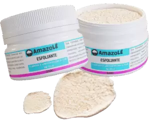
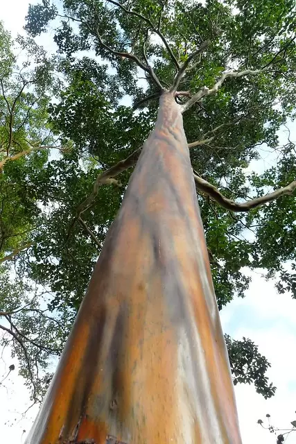
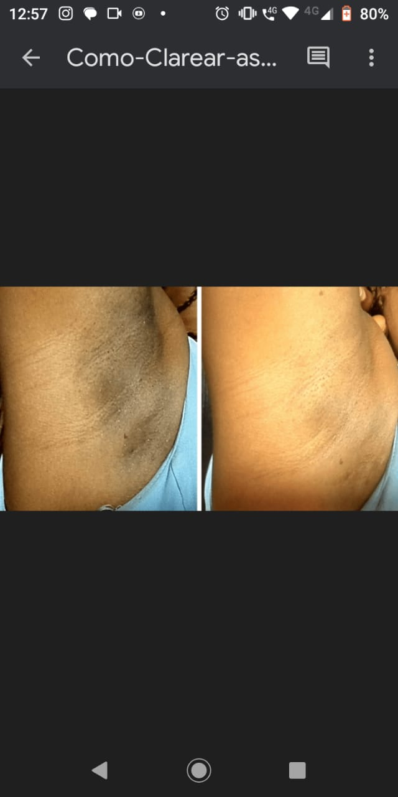
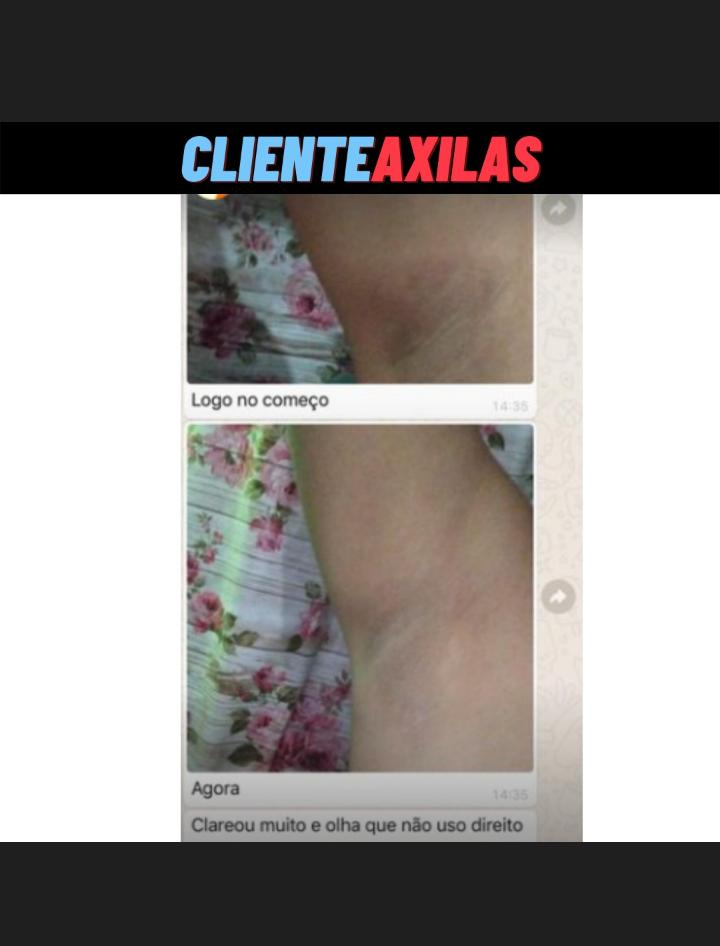
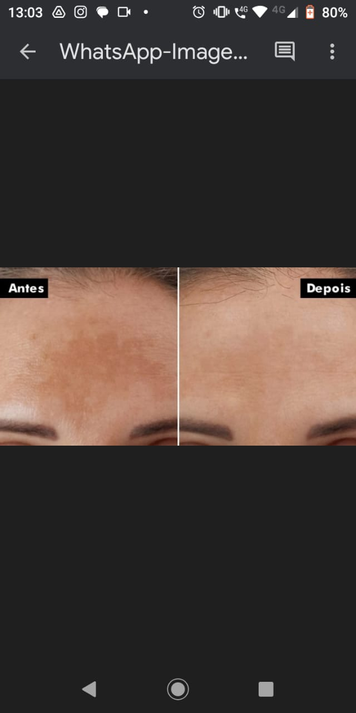

Sobre o Produto
O Amazole Esfoliante Clareador promove a renovação da pele, removendo impurezas e células mortas. Sua fórmula exclusiva oferece clareamento de manchas e hidratação, deixando a pele macia, uniforme e com brilho natural.
Como é Feito
- Niacinamida – Clareia manchas e melhora a textura da pele
- Vitamina C – Ilumina e combate radicais livres
- Cristais de Quartzo – Esfoliam suavemente e renovam a pele

Principal Matéria Prima
Pau-mulato (mulateiro)
O mulateiro (Calycophyllum spruceanum) é uma árvore nativa da Amazônia, conhecida há séculos pelas comunidades tradicionais da região. Chamado também de "árvore da juventude", seu caule se renova naturalmente — a casca antiga se solta e revela uma nova, simbolizando renovação e regeneração.
Resultados
Veja abaixo resultados reais de pessoas que utilizaram o Amazole Esfoliante Clareador:


